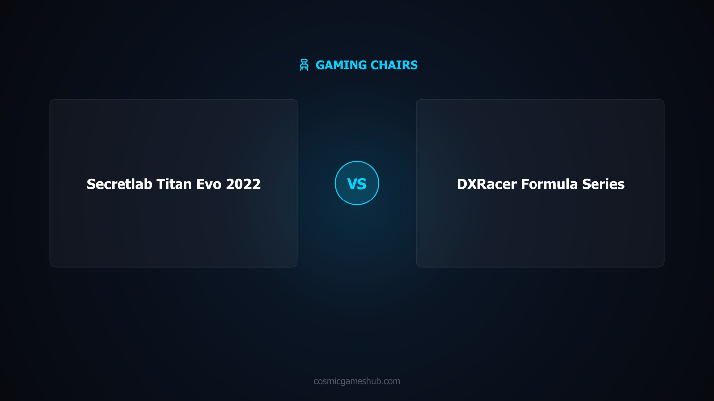

As an Amazon Associate I earn from qualifying purchases. Links below may earn us a commission at no extra cost to you.
Gaming Chairs
Secretlab Titan Evo 2022 vs DXRacer Formula Series: Premium Ergonomics vs Classic Racing Bucket
The DXRacer Formula is the chair that defined the gaming chair category. The Secretlab Titan Evo 2022 is what gaming chairs evolved into after a decade of refinement. At $429 vs $299, the question isn't really about the $130 gap — it's about whether a chair is furniture you sit in, or a tool you depend on for 6-hour sessions every day.

Quick Verdict
Serious/daily gamers → Titan Evo · Budget entry point / casual use → DXRacer Formula
The Secretlab Titan Evo 2022 is the better chair by every ergonomic and build quality measure that matters for long-session gaming — cold foam, 4-way lumbar, magnetic memory foam head pillow, 4D armrests, steel frame, and a 5-year warranty that backs it up. The DXRacer Formula Series is the classic $299 racing-bucket: it gets you into a gaming chair aesthetic, includes lumbar and neck pillows, and works fine for shorter sessions. If you game 4+ hours daily, spend the extra $130. If you're furnishing a first gaming setup on a budget, the Formula is a solid entry point.
Spec Comparison
Spec
Secretlab Titan Evo 2022
DXRacer Formula Series
Price
~$429
~$299
Foam Type
Cold foam (molded)
High-density foam
Weight Capacity
285 lbs (Regular) / 395 lbs (XL)
200 lbs
Recline Range
85°–165° (near-flat)
90°–135°
Armrest Adjustability
4D (up/down, forward/back, side, pivot)
Fixed height only
Lumbar Support
4-way adjustable integrated system
External pillow (included)
Head/Neck Support
Magnetic memory foam head pillow
Neck pillow (included)
Frame
Cold-forged steel
Steel (standard)
Cover Material
Leatherette or SoftSkin (fabric)
PU leather
Seat Back Design
Adjustable integrated back
Fixed-curve racing bucket
Warranty
5 years
2 years
Sizes Available
Regular, XL
Standard (one size)
Head-to-Head: Category by Category
Comfort & Foam
Secretlab Titan Evo 2022 — significantly
Cold foam versus high-density foam is the central comfort difference between these two chairs. The Titan Evo's cold-cure foam is molded to the seat contour and maintains its original shape under sustained daily use — most owners report minimal compression after 2–3 years. The DXRacer Formula's high-density foam sits firmer initially and feels solid out of the box, but the cell structure compresses progressively under body weight over months of heavy use. For sessions under 2 hours, the difference is marginal. For 4–6 hour daily sessions, the Titan Evo's foam is measurably more supportive at the 12-month mark than the DXRacer is at 6 months.
Build Quality & Materials
Secretlab Titan Evo 2022
Both chairs use steel frames, but the Titan Evo's cold-forged steel construction is denser and more rigid. More telling is the warranty difference: 5 years versus 2 years reflects each company's confidence in their own build. Secretlab offers the Titan Evo in two cover materials — SoftSkin (a breathable fabric weave) and leatherette — both of which hold up better to long-term sweat and friction than the DXRacer's single PU leather option. PU leather on the Formula Series is known to crack and peel at stress points after extended use, particularly on the seat bolsters. The Titan Evo's SoftSkin option avoids this entirely.
Lumbar & Ergonomics
Secretlab Titan Evo 2022 — by a wide margin
This is where the price gap is most justified. The Titan Evo's 4-way lumbar system is integrated into the chair back and adjusts up/down for lumbar height and in/out for protrusion depth — meaning you can precisely dial in support for your specific spinal curve without accessories. The DXRacer Formula includes an external lumbar pillow and neck pillow attached by elastic straps. These pillows work, but they shift position during movement and provide a single fixed support point rather than conforming to your posture. For anyone with lower back sensitivity or who experiences fatigue in long sessions, the Titan Evo's integrated lumbar is a meaningful ergonomic step up.
Adjustability
Secretlab Titan Evo 2022
The Titan Evo's 4D armrests adjust in four axes: height, depth (forward/back), width (side-to-side), and angle (pivot). This matters because incorrect armrest positioning is a leading cause of shoulder and wrist strain in gaming setups. The DXRacer Formula offers fixed armrests with height adjustment only. The Titan Evo also reclines to 165° — near flat — with full lumbar support maintained throughout the range, while the Formula tops out at 135°. The Titan Evo's recline mechanism is notably smoother and locks at more positions. For a custom-fit seated experience across different desks, monitors, and body types, the Titan Evo's adjustability is in a different tier.
Long Session Performance
Secretlab Titan Evo 2022
At hour 4 and beyond, the differences compound. The Titan Evo's cold foam doesn't hot-spot the way high-density foam can under sustained body heat. The magnetic memory foam head pillow positions precisely at your neck without slipping — a common frustration with the Formula's elastic-strap neck roll. The integrated lumbar maintains consistent support as your posture subtly shifts during a long session rather than requiring manual repositioning. Users who've owned both consistently report noticeably less lower back and shoulder fatigue on the Titan Evo during marathon sessions. It is the better workstation chair as well as the better gaming chair.
Value
DXRacer Formula (at the budget level)
The DXRacer Formula Series delivers genuine value for what it is: an entry-level gaming chair with the classic racing aesthetic, included lumbar and neck support, and a steel frame at $299. If budget is the constraint and this is your first gaming chair, it is a reasonable purchase. The Titan Evo at $429 also delivers strong value relative to its quality tier — cold foam, 4D armrests, 5-year warranty, and true ergonomic engineering put it among the best gaming chairs at any price. On total cost of ownership over 5 years, the Titan Evo almost certainly works out cheaper than replacing a worn DXRacer Formula twice. But if $299 is the ceiling, the Formula is a fair spend.
4 Key Differences
1. Foam Type
Cold foam (Titan Evo) holds its shape for years. High-density foam (DXRacer Formula) gradually compresses under sustained daily load. This is the single biggest long-term comfort difference between these two chairs.
2. Lumbar System
Integrated 4-way adjustable lumbar (Titan Evo) vs external strap-on pillow (DXRacer Formula). The integrated system holds position, adjusts to your spine's specific curve, and doesn't require repositioning. This is the ergonomic differentiator.
3. Armrest Freedom
4D armrests (Titan Evo) vs height-only fixed armrests (DXRacer Formula). The ability to angle, widen, and extend armrests to match your desk height and keyboard position directly reduces shoulder and wrist fatigue over long sessions.
4. Warranty & Durability Commitment
5-year warranty (Titan Evo) vs 2-year warranty (DXRacer Formula). Secretlab's longer warranty is backed by real build confidence. The DXRacer Formula's PU leather cover has a known failure point at stress creases within 2–3 years of heavy use.
Verdict
The Secretlab Titan Evo 2022 is the better gaming chair for serious gamers — people who use their setup as a primary workstation, game 4+ hours per day, or invest in gear that lasts. The cold foam, 4-way lumbar, 4D armrests, and 5-year warranty aren't marketing features; they address the actual ways chairs fail and the actual ways bodies fatigue. The $130 premium over the DXRacer Formula is justified.
The DXRacer Formula Series remains the definitive budget entry point into gaming chairs. It created the category, delivers the aesthetic, includes the support accessories, and works reliably for casual gaming sessions. If you're buying your first gaming chair, keeping costs down, or gifting a setup to someone building their first desk, the Formula is a fair and proven choice.
Which Should You Buy?
Secretlab Titan Evo 2022
~$429
Best for: Daily gaming · Long sessions · Ergonomic support · 5+ year lifespan
Yes — if you sit for more than 4 hours a day. The Secretlab Titan Evo 2022's cold foam retains its shape for years where high-density foam gradually compresses and loses support. The 4-way lumbar system, magnetic memory foam head pillow, and 4D armrests provide ergonomic adjustability that makes a measurable difference over long sessions. The $130 price gap is real, but if gaming chairs are a daily tool rather than an occasional seat, the Titan Evo pays back that difference in long-term durability and comfort. If you sit under 2 hours per session, the DXRacer Formula is adequate.
Secretlab backs the Titan Evo 2022 with a 5-year warranty, and the cold foam core is engineered to maintain its shape significantly longer than conventional high-density foam. Most Titan Evo owners report little to no seat compression after 2–3 years of daily use. The steel frame construction means structural failure is rare. In practical terms, a well-maintained Titan Evo should last 7–10 years with minimal loss in support quality — far outlasting budget competitors that typically start losing foam integrity within 18–24 months of heavy use.
The DXRacer Formula Series is best suited for users 5'6" to 6'0" and under 200 lbs. The fixed-curve seat back and racing-bucket shape that defines the Formula's look also limits torso clearance for taller frames. Users above 6'0" frequently report that the fixed headrest wing lands uncomfortably against the back of their head. DXRacer makes taller-focused models (XL, King series) for bigger frames. The Secretlab Titan Evo, by contrast, comes in Regular (5'7"–6'2") and XL (5'11"–6'9") sizes with adjustable lumbar that accommodates a much wider range of body proportions.
Cold foam (also called cold-cure foam) is generally superior for long-session seating. It is produced through a molding process that creates a more uniform, resilient cell structure — meaning it bounces back to its original shape after compression rather than slowly taking a permanent impression of your body. High-density foam (used in the DXRacer Formula) is denser and firmer initially, but the cells flatten under sustained pressure over time. For gaming chairs used 4+ hours daily, cold foam maintains its support profile significantly longer. The trade-off is cost: cold foam is more expensive to produce, which is a key driver of the Titan Evo's higher price point.
For most people who prioritize ergonomics above aesthetics, a well-built office chair (Herman Miller Aeron, Steelcase Leap, or even a mid-range option like the Branch Ergonomic Chair) will provide better lumbar support and adjustability than most gaming chairs at the same price. Gaming chairs are designed with racing-bucket aesthetics first; ergonomics are secondary on most models. The Secretlab Titan Evo is a notable exception — it is one of the few gaming chairs built with ergonomics genuinely in mind (the 4-way lumbar is a real differentiator). If you want the gaming aesthetic and solid ergonomics, the Titan Evo is the gaming chair to buy. If aesthetics don't matter, compare it against office chairs in the $300–500 range before deciding.
Affiliate Disclosure: As an Amazon Associate I earn from qualifying purchases. Prices may vary.